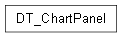

Visualization package¶

Submodules¶
Visualization.DT_ChartPanel module¶
DT_ChartPanel.py
Live chart window that plots the raw sine data (“RealSpace” / Physical Twin) against the Digital Twin model’s predicted data (“VirtualSpace” / Digital Model), exactly like the original Java version built with XChart + Swing.
Python has no built-in equivalent of XChart/Swing, so this port uses matplotlib in interactive mode (plt.ion()) to reproduce the same live, continuously-updating line chart with two series.
If no graphical display is available (e.g. running on a headless server or CI), the chart automatically falls back to a non-interactive mode: it keeps recording the data and silently skips on-screen rendering, so the rest of the simulation still runs without errors. In that fallback mode, a snapshot image (‘dt_dms_chart.png’) is written to disk at the end so results are still visible.
This is the Python equivalent of Visualization/DT_ChartPanel.java.
@author Zeeshan ALI, Mamadou Kaba TRAORE @version 1.0 (Python port)